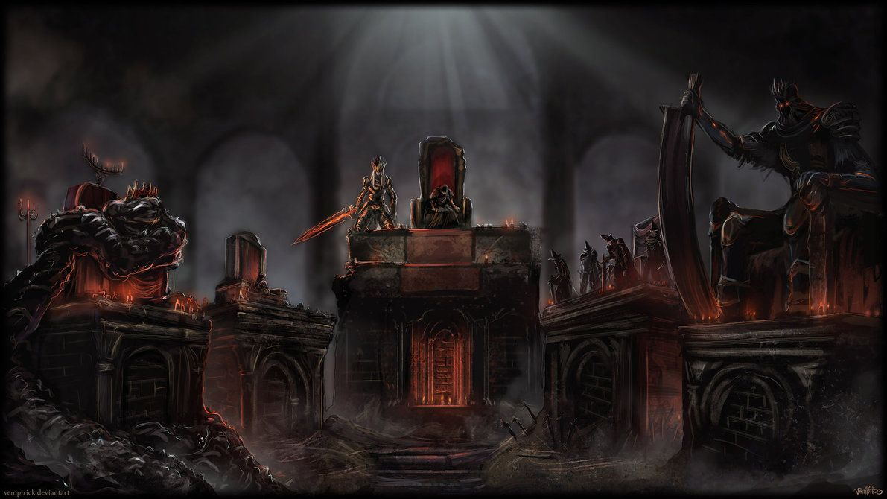
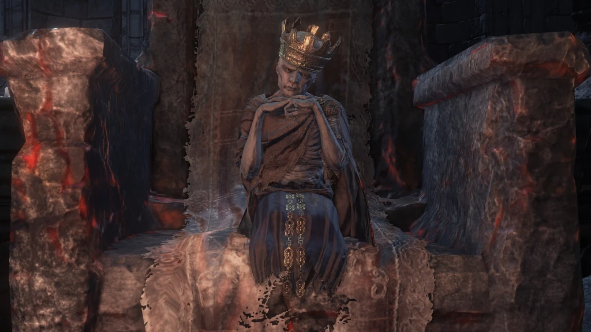
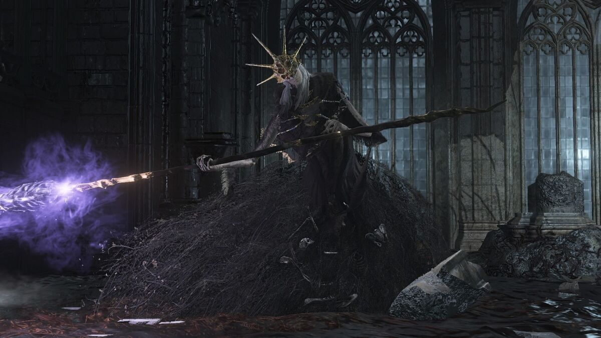
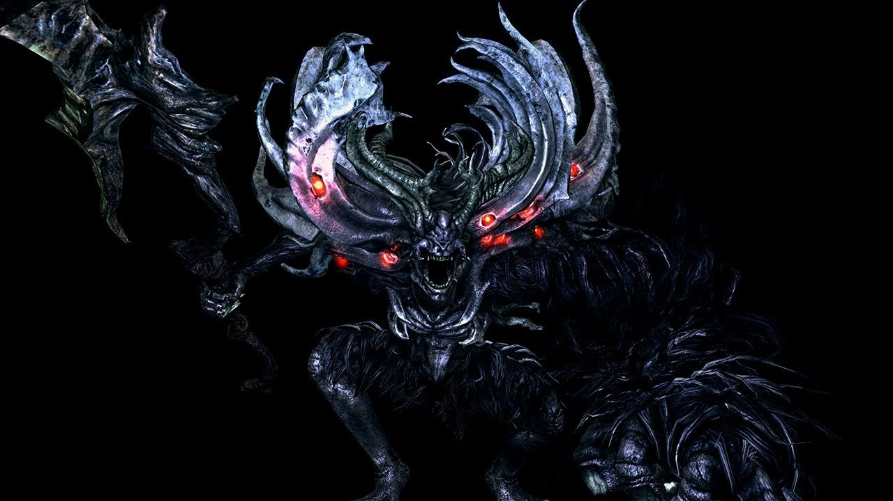
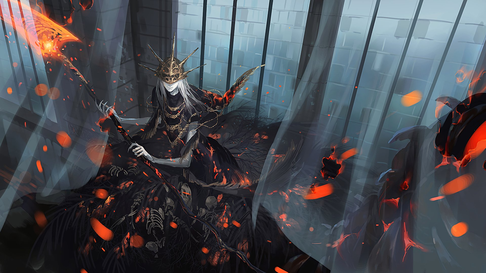
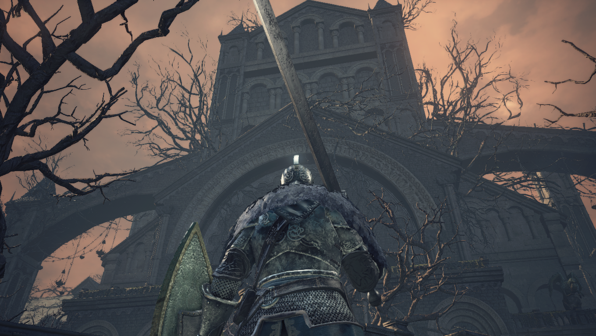
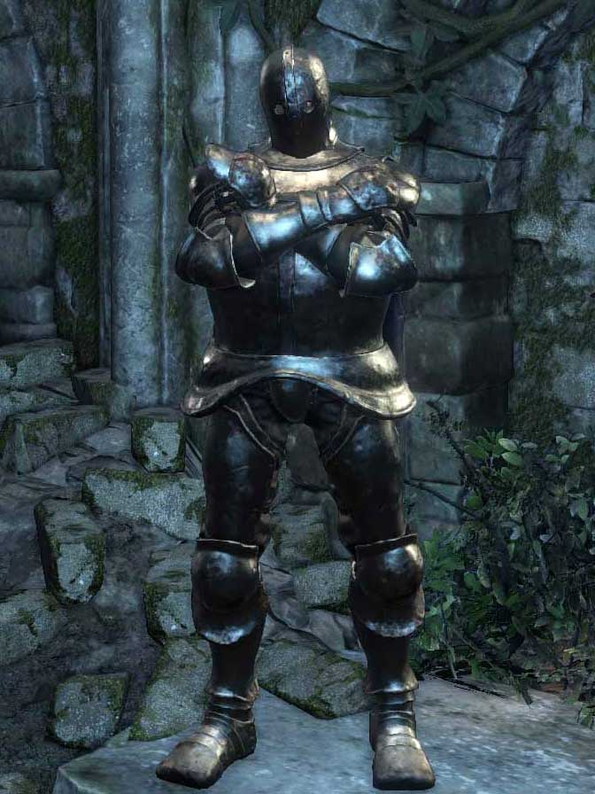
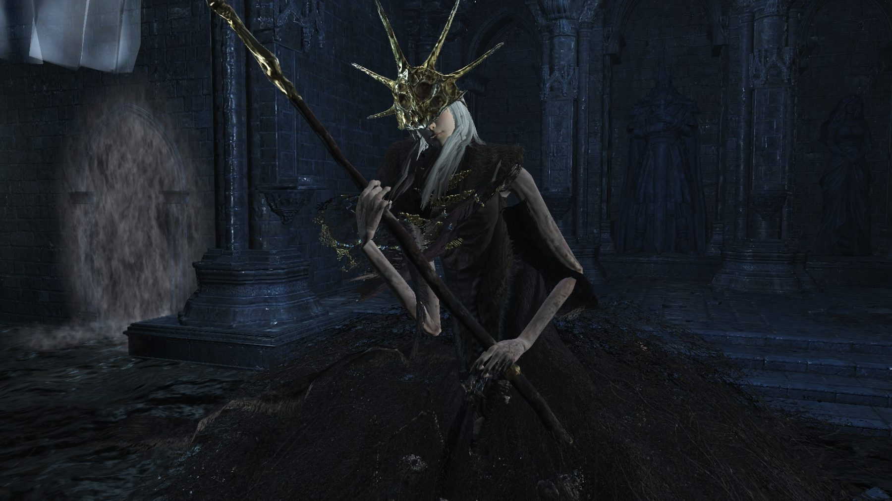
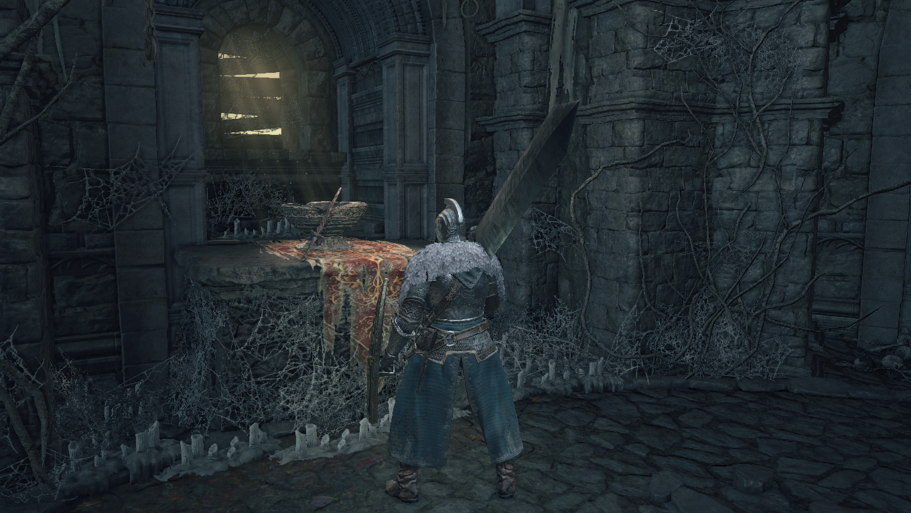

"Somente na verdade os senhores abandonarão seus tronos e os incultos se levantarão. Sem nome mortos-vivos amaldiçoados, inaptos até mesmo para serem de cinza. E assim é, que as cinzas buscam brasas."
"Dizem que estes são os restos mortais de um santo que se lançou na fogueira. Mas nunca saberemos ao certo, pois fuligem e cinzas não contam história."
Como diz a introdução, os Unkindled são seres de cinzas, indignos de ascender para se tornarem Lordes of Cinder. Eles são despertados pelo toque de um sino que toca quando a Primeira Chama está em perigo de desaparecer. Eles despertam no Cemitério de Cinzas e buscam as brasas da Primeira Chama. Durante todo o jogo, o protagonista é chamado de Unkindled, Champion of Ash ou Ashen One, todos os quais remontam às origens dos incultos.
Existem algumas especulações sobre o que significa ser inaceso. Primeiro de tudo, ao matar certos NPCs não acesos, eles soltam cinzas, o que significa que eles foram queimados em algum momento antes de reviver. Assim, os Unkindled talvez estejam relacionados ao processo de criação do bornfire, ou são mortos-vivos amaldiçoados sem nome que ligaram a Primeira Chama, mas morreram no processo. Os Lordes de Cinder, por outro lado, eram seres tão poderosos que sobreviveram à ligação e se transformaram em Cinder em vez de meras Ash.
A primeira dica que sustenta essa teoria é um jogo entre as palavras Cinder e Ash. Este último refere-se ao que resta depois que um material foi queimado completamente, enquanto Cinder significa que ele não foi consumido completamente. Os mortos-vivos se jogam na fogueira e alimentam a Chama, mas eles são inteiramente consumidos no processo, deixando apenas cinzas que precisam de brasas para se inflamar. Essas cinzas são encontradas inúmeras vezes ao longo da jornada do jogo, implicando a natureza cíclica de Dark and Flame. A frase de introdução "Ash seeketh embers" toma forma agora. As brasas no jogo são definidas como:
"Nenhum Unkindled pode realmente reivindicar as brasas que queimam dentro do seio de um campeão, que é precisamente o que torna seu anseio por calor tão aguçado. Ganhe a força da chama e aumente o HP máximo até a morte. Com a força do fogo, os sinais de invocação de Unkindled tornam-se visíveis, e os buscadores de brasas podem ser convocados para se juntarem em cooperação. Mas cuidado que as brasas também possam atrair invasores."
De DSII sabemos que muitas gerações se passaram e muitos indivíduos se sacrificaram para ligar a Chama e reacender o fogo. Lordes de Cinder, vieram muitas gerações depois, e é raro alguém sobreviver ao fogo. Parece que é preciso ser poderoso de uma maneira única para sobreviver e, mesmo assim, sua forma muda. Gwyn era um Senhor de Cinder, mas é claro que sua forma foi alterada pela ligação e foi um grande sacrifício, mesmo para alguém tão grande quanto ele. Uma grande quantidade de gerações se passaram, obviamente teríamos muitos dos túmulos não acesos e, é claro, muitos túmulos no Cemitério de Ash. Também lutamos contra uma manifestação de todos os mortos-vivos que ligaram o fogo, ou seja, a Alma de Cinder, que parece ser boa em todos os estilos de luta.
Outra dica que sustenta que Lords of Cinder não queimou completamente e permaneceu vivo depois de ligar o fogo é o fato de que todos os incultos ressuscitam com suas formas humanas. Todos os Lordes de Cinder acordam com seus cadáveres carbonizados, como Ludleth, e todos eles parecem ter ganhado certa quantidade de poder de fogo, a julgar por suas lutas contra chefes. Aldrich também não morreu, ele tinha uma visão de uma próxima Era do Mar Profundo, então ele começou a devorar deuses.

"Os Lordes das Cinzas são heróis que ligaram a Primeira Chama e prolongaram a Era do Fogo"
O último detalhe relacionando os Unkindled a todos os mortos-vivos anteriores que se sacralizaram para a Chama é encontrado em uma canção. O nome desta canção é mencionado na introdução de DSIII. quando você vence DSI, você vê seu personagem queimando no forno e, em seguida, The Nameless Song começa a tocar. Esse tom triste é jogado no final de sua missão e é o que define seu personagem. Nossos personagens fizeram tudo e morreram mil vezes apenas para ser um sacrifício para estender a idade dos deuses. Aconteceu muitas vezes, e eles não têm nome, ninguém vai se lembrar de seus nomes ou escrever poemas sobre eles.
Quaisquer que sejam os incendiados, sua tarefa é clara. Eles têm que procurar os Senhores de Cinder, a fim de reencenar religando a Primeira Chama e preservar a era do fogo. Eles também são mortos-vivos que não estão totalmente vinculados ao processo de esvaziamento que vimos em jogos passados, precisando adquirir Dark Sigils para ficarem Hollow.
"Se os senhores não retornarem aos seus tronos, que retornem como cinzas."
A pessoa se torna um Senhor de Cinder religando a Primeira Chama no Forno e Sobrevivendo. Existem atualmente 5 Lordes de Cinder, todas as 5 de suas cinzas são necessárias para reencenar a Ligação da Primeira Chama. Os 5 Lordes são Aldrich Saint of the Deep, Ludleth o Exilado, Yhorm o Gigante, a Legião dos Mortos-Vivos de Farron e Lothric, a última esperança de sua linhagem.
Ludleth, o Exilado, ligou a Primeira Chama há muito tempo, disposto-se a fazê-lo. Aldrich já foi um clérigo que devorava homens. Ele se tornou tão poderoso que foi usado para religar a Chama. Após a ascensão a um Senhor de Cinder, Aldrich procurou devorar deuses e até ganhou um culto em torno dele que formou a Igreja Sable das Profundezas.

"Ludleth, o Exilado"

"Aldrich o Devorador de Deuses"
Os Vigilantes da Legião do Abismo Mortos-Vivos de Farron participaram do sangue de um lobo antigo, o sangue do Lobo ligou os observadores do Abismo ao seu mestre, as lendárias Artorias do Abismo. Os Vigilantes do Abismo juraram em sua parte Sangue de Lobo para religar a Chama.
"Os Vigilantes da Legião do Abismo"
Yhorm, o Gigante, procurou acabar com a chama profanada religando a Primeira Chama. Em vez de eliminar a chama profanada, a capital queimou matando todos, exceto Yhorm. Pontif Sulyvahn viajou para a Capital Profanada e viu a Chama Profana. Isso sugere que Yhorm ligou a Chama antes de Aldrich.
"Yhorm, o Gigante"
Lothric se recusou a religar a Chama, optando por permitir que a Chama desaparecesse enquanto a observava de longe com seu irmão.
"O abismo era originalmente um lugar pacífico e sagrado, mas tornou-se o descanso final para muitas coisas abomináveis. Este conto do Profundo oferece proteção para aqueles que adoram em meio a esses horrores."
"Esses insetos que se escondem nas profundezas têm mandíbulas minúsculas forradas com presas para rasgar a pele e se enterrar na carne em um piscar de olhos, causando sangramento intenso."
"Almas que incham das profundezas perseguem seu alvo, atraídas para a vida."
"Uma joia de titanita infundida. Encontrado na escória da Catedral das profundezas. Usado em infusão para criar armas profundas. Armas profundas infligem danos sombrios, mas perdem efeitos de escala. Há uma escuridão que está além do alcance humano."
Como afirmado no resumo de Dark Souls, o Abismo não foi criado até os eventos que ocorreram em Oolacile, e nasceu depois que a humanidade de Manus enlouqueceu devido à tortura. A humanidade é descrita como algo quente, mas ao mesmo tempo perigoso, por isso, quando perturbada, criou o Abismo. Artorias viajou para cá a fim de detê-lo e afirma-se, em seu anel, que ele fez um pacto com as criaturas do abismo para não ser corrompido e morto. Esta parte é fundamental porque nos dizem que a humanidade nasce da alma escura, o que implica escuridão. Mas essa escuridão não é involuntariamente má, até que foi perturbada e criou o Abismo. O Abismo corrompe tudo e mata a todos, mas parece que algumas criaturas habitam este lugar peculiar.
A partir das descrições acima, podemos ver que o Deep era inicialmente calmo, mas tornou-se um lugar para criaturas abomináveis. Existem insetos nas profundezas que basicamente matam toda a vida. O Profundo é Escuro, mas uma Escuridão que está além da humanidade, que também é escura. O Profundo poderia ser o Abismo. Quando as Almas Divinas são interrompidas, vocês criam monstruosidades. A Bruxa de Izalith tentou criar uma Primeira Chama com seu próprio Senhor Alma e ela acabou de criar o Caos. O povo Oolacile interrompeu um fragmento da Alma Negra (Manus) e criou o Abismo.

"Manus, O Pai do Abismo"
Uma última dica sobre a natureza do Deep é dada pelas armas da alma do chefe da Legião dos Mortos-Vivos de Farron, a Grande Espada do Cavaleiro do Lobo e a Espada Grande de Farron, já que ambas as espadas causam um dano bônus contra Aldrich e os Diáconos das Profundezas. Essas armas são projetadas para lutar contra o abismo e causar mais danos aos inimigos abissais, portanto, Aldrich e os diáconos estão relacionados ao abismo.
Aldrich é outro Lorde das Cinzas que negligenciou seus deveres, tendo suas próprias ambições após a ligação do fogo. Ele era um clérigo no passado, mas em algum momento ele começou a comer carne humana, e ele certamente gostava disso, como pode ser visto em Aldrich Ruby ou Saphire:

"Infame por seu apetite por carne aparentemente tinha o desejo de compartilhar com os outros sua alegria de absorver os tremores finais da vida enquanto se deleitava nos gritos de sua vítima."
Ele é provavelmente o fundador da Catedral das Profundezas, onde conseguiu alguns seguidores para seu culto, talvez devido ao medo. Suas vítimas foram transportadas do Assentamento de Mortos-Vivos para a Catedral através da Estrada dos Sacrifícios. Isto é inferido do Conjunto Evangelista:

"Catedral das Profundezas"
"Essas professoras, todas mulheres, vieram para iluminar os habitantes do Assentamento dos Mortos-Vivos e enviaram portadores no caminho do sacrifício."
Afirma-se também que Horace evitou ser devorado vivo e sobreviveu, juntamente com outras crianças, insinuando ser Anri. Essa dica vem principalmente da fixação de Anri em matar Aldrich desde o nosso primeiro encontro, sendo até mesmo uma convocação. A Armadura de Horace Exceutioner também nos diz algo:
"Armadura de aço de Horace, o Hushed, que tomou gosto por seu interior frio e volumoso. Dizia-se que o proprietário original era um carrasco corrupto, que foi morto e despojado de sua armadura. Horace é uma das duas únicas crianças a escapar das garras de Aldrich."

"Horace, o Silencioso"
Em algum momento, a chama começou a desaparecer e a maldição dos mortos-vivos surgiu novamente, então ele provavelmente comeu humanos mortos-vivos também. O que aponta isso é a alta quantidade de mortos-vivos fracos do lado de fora da catedral, corpos que Aldrich não terminou, como o conjunto de guardas de túmulos parece sugerir:
"Saia apodrecida e esfarrapada, roupão, capuz e envoltório. Traje de guardas de túmulos na Catedral das Profundezas. Os guardas do túmulo foram encarregados de descartar os cadáveres sempre crescentes que atormentavam a catedral. Suas roupas são totalmente pútridas, encharcadas no sangue e na mucilagem de sua empreitada."
Dissemos antes que Aldrich começou a ser clérigo, mas depois se corrompeu. Não se sabe se a corrupção ocorreu antes de comer tantos seres humanos, mas ele cresceu (trocadilho intencional) apaixonado por O Abismo. Pode ser que, depois de matar tantos humanos e desfrutar do sofrimento de suas vítimas enquanto elas estavam sendo comidas vivas, ele interrompeu uma quantidade significativa da alma escura, transformando-se em uma criatura semelhante a um abismo.
Depois de algum tempo, quem governou o reino o fez ligar a chama, não por santo, mas por poder, como Hawkwood nos diz. Ele então teve visões da próxima era do Mar Profundo, então ele começou a devorar Deuses. Isso pode ter duas explicações possíveis. A idade do fogo significa a idade dos deuses, então ele tentaria se livrar de todos os deuses por um dia governando em uma era de trevas. Em segundo lugar, ele precisaria se tornar algo mais poderoso para sobreviver se O Abismo se espalhar. Cinders of a Lord e Soul of Aldrich, respectivamente, diziam:

"Aldrich tornou-se um senhor devorando homens, mas estava desiludido com seu trono, e assim passou a devorar deuses."
"Quando Aldrich ruminou sobre o desvanecimento do fogo, inspirou visões de uma era vindoura do mar profundo. Ele sabia que o caminho seria árduo, mas não tinha medo. Ele mesmo devoraria os deuses."
Em qualquer caso, ele devorou alguns deuses e ligou o fogo, então seu corpo de cinza foi levado para o túmulo. Quando ele acordou, ele marchou da Catedral para Anor Londo para ter um presente de Sulyvahn, Gwyndolin. É possível que, quando lutamos contra ele, ele ainda esteja devorando o deus da lua escura, já que ainda vemos parte dele. Se isso estiver certo, então isso significa que Priscilla está viva, já que ele teve um sonho com ela enquanto devorava Gwyndolin. Darkmoon Longbow e Foice Lifehunt:
"Longbow of Darkmoon Gwyndolin, que foi gradualmente devorado por Aldrich.Este arco dourado está imbuído de magia poderosa e é mais impressionante com Moonlight Arrows."
"Aldrich sonhou enquanto devorava lentamente o Deus da Lua Escura. Nesse sonho, ele percebeu a forma de uma menina jovem e pálida escondida.
Chama profanada empunhada pelas bruxas irithyllianas. Sozinho, Yhorm tornou-se um Senhor das Cinzas para colocar a Chama Profanada para descansar, sabendo muito bem que aqueles que falavam dele como senhor eram bastante insinceros. A Capital Profanada foi consumida pelo fogo depois que Yhorm, o Gigante, se tornou um Senhor das Cinzas. Diz-se que o fogo, nascido do céu, não incinerou nada além de carne humana. A Chama Profanada foi desencadeada pela maldição dessas mulheres, parentes de um certo oráculo, mas apesar de sua culpabilidade, elas continuaram vivendo, sem nenhum cuidado.
Carvão usado para infusão de armas. Restos do fogo que incendiou a Capital Profana, preservados em um crânio gelado. Dê ao ferreiro no santuário para permitir o uso de pedras preciosas para infusão escura, de sangue e oca.
O Darksign é um símbolo dos mortos-vivos. Aqueles amaldiçoados com ela renascem após a morte e, eventualmente, perdem a cabeça e se tornam ocos. Esta é uma razão pela qual os mortos-vivos são expulsos de suas casas quando eventualmente enlouquecem. Horácio é uma amostra disso, originalmente sendo um membro do pacto dos Sentinais, e declarado amigo de Anri, mas mais tarde sendo encontrado atacando qualquer um que ele encontrasse.
O eclipse aparece no Castelo de Lothric e em várias outras áreas, depois que o Castelo de Lothric é desbloqueado. Pode ser um sinal chamado pela chama que se desvanece e se parece um pouco com um Sinal Negro. * Especulação * Talvez esteja chamando mortos-vivos para ligá-lo e prolongar sua vida. Talvez seja simbolizar que o Fogo está desaparecendo e a Era do Fogo está terminando.
"Espada faltando na fogueira do santuário. Empurre para a fogueira do santuário para restaurar seu poder e permitir a viagem entre fogueiras. Esta espada só é legada a cinzas escolhidas, como julgado pelo Iudex, que aguarda a chegada das cinzas como uma bainha."
Fogueiras em Dark Souls 3 são pontos seguros dentro de Locais onde os jogadores podem descansar, consertar equipamentos, recuperar Estus e viajar para outras fogueiras acesas.
Quando você começa o jogo, você se encontra no Cemitério de Cinzas e se aventura no Santuário Firelink. Neste Santuário Firelink você deve inserir a Espada Enrolada na pilha de ossos e cinzas da fogueira para poder usá-la. Quando você usa a fogueira Firelink para ir a Lothric pela primeira vez, você é mandado para um altar com uma bacia e uma espada enrolada quebrada.

Fragmento da espada enrolada de uma fogueira
Fragmento da espada enrolada de uma fogueira que serviu ao seu propósito há muito tempo. Retorna rodízio para a última fogueira usada para descansar, ou para a fogueira no Santuário Firelink. Pode ser usado repetidamente. As fogueiras estão ligadas umas às outras de forma irreversível, mantendo sua afinidade por muito tempo depois que seu propósito se esgota.
Mais tarde no jogo, você se depara com uma área idêntica ao Firelink chamada Untended Graves. Aqui você encontra um santuário escuro com um fragmento da espada enrolada nele.
No final do jogo em sua jornada para o Forno, você é deformado para mais uma cópia do Firelink chamada Santuário Sem Chamas. O Santuário Sem Chama está em condições ainda piores do que os Túmulos Não Tratados e é aqui que você encontra uma fogueira que o deforma para o Forno.